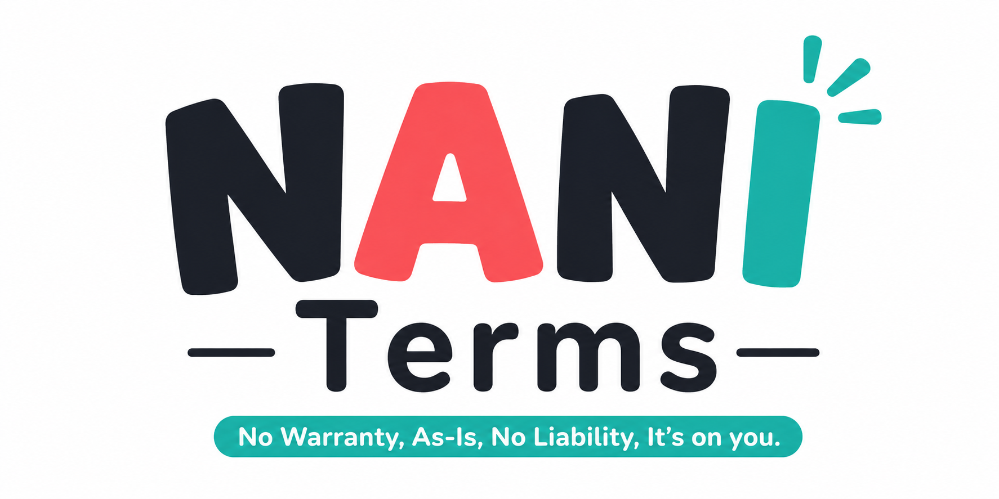

No Warranty
保証なし

No Warranty, As-Is, No Liability, It's on you.
NANI Terms · ナニ・タームズ · NANI標準利用規約
無料・実験的・小規模な Web サービスのための、短く読めて、版を固定して採用できる標準利用規約。
保証なし
現状のまま
責任は法令の範囲で限定
使うかはあなたの判断で
サービスのフッターや README から、採用する言語とバージョンへリンクしてください。
NANI Terms は汎用の土台です。有料取引、個人情報、医療、金融、通信などには追加条件や個別確認が必要です。
正式本文を変更せず、サービス固有の事項は追加条件として別に定めてください。